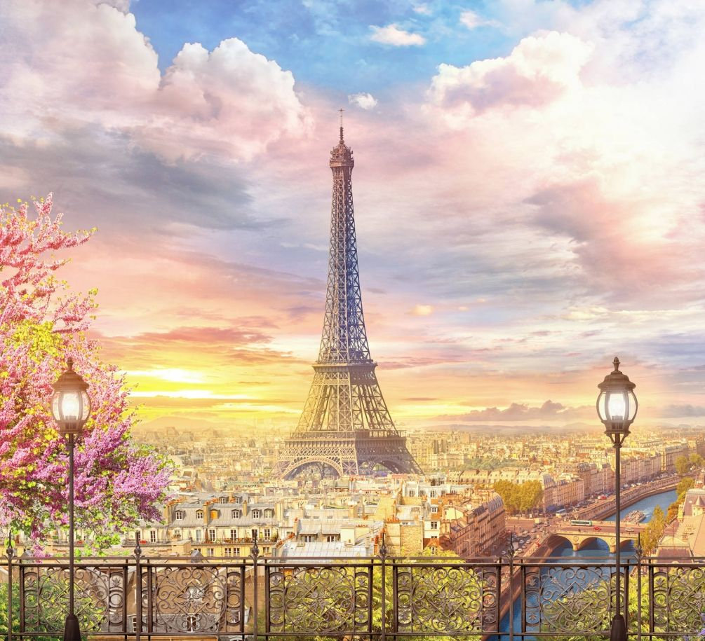
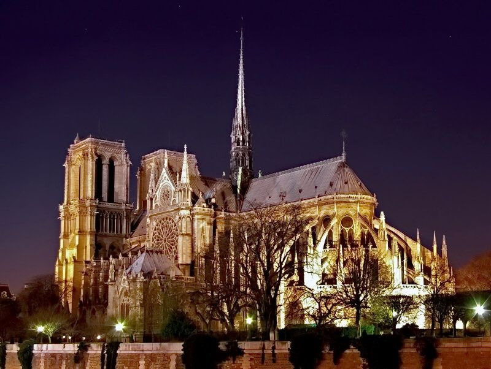
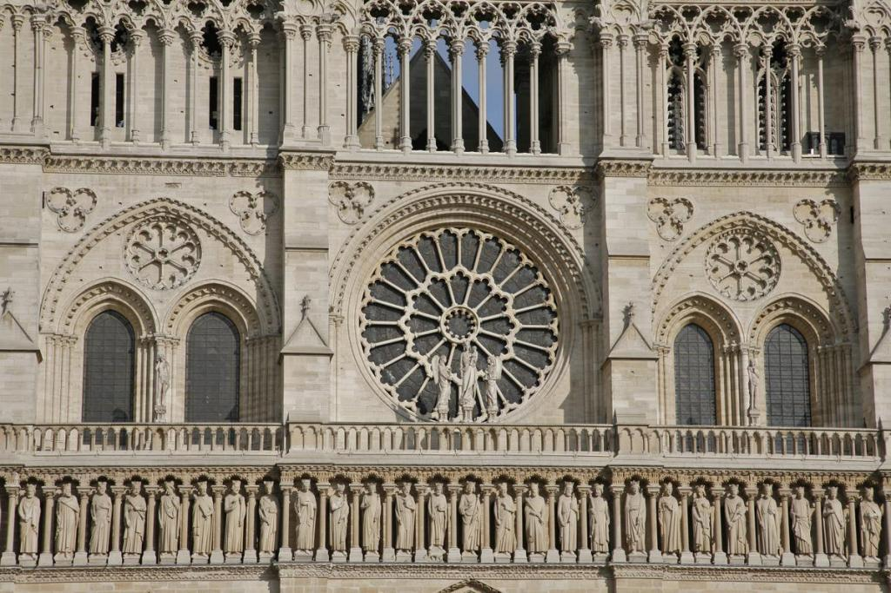
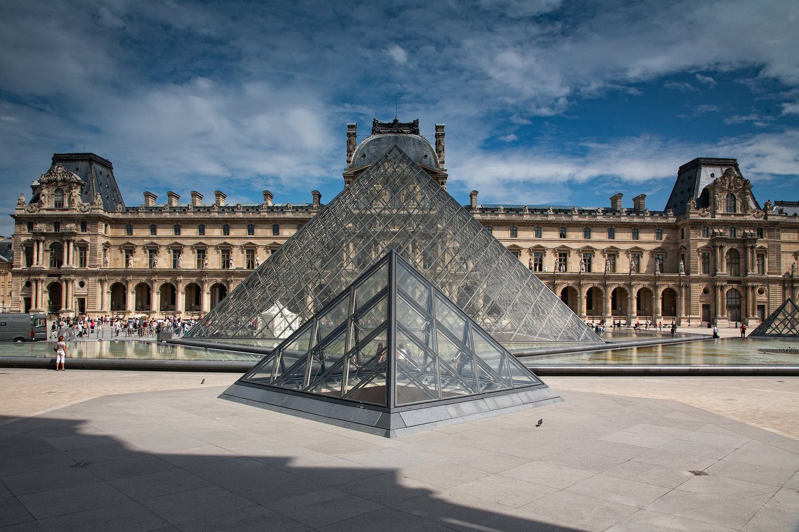
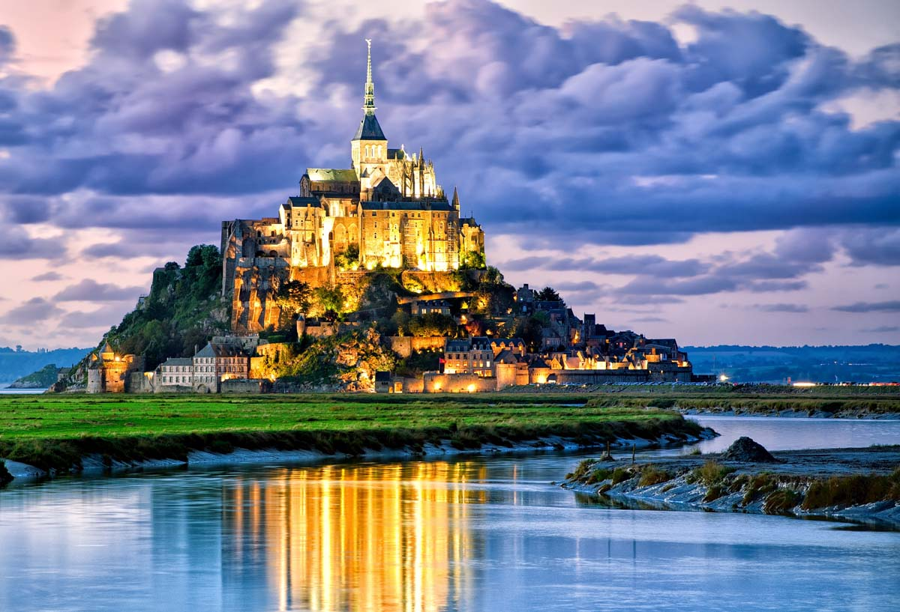

Пам’ятки та визначні місця Франції
Ейфелева вежа
– символ Парижа. Ця величезна металева споруда заввишки понад 320 метрів була побудована за 2 роки й 2 місяці в 1889 році. Названа на честь інженера Гюстава Ейфеля, архітектурне бюро якого її спроектувало і побудувало. Ейфелева вежа була зведена як тимчасова споруда до всесвітньої виставки, але з часом перетворилася на головну пам’ятку Парижа. Вежа неодноразово змінювала колір — від жовтого до червоно-коричневого. Останні десятиліття Ейфелева вежа незмінно фарбується у так званий «Коричневий-Ейфелевий» колір — офіційно запатентований, близький до природного відтінку бронзи.
Нотр-Дам-де-Парі
Собор Паризької Богоматері (Нотр-Дам-де-Парі) – найстаріший і найвідоміший собор Парижа, розташований в найдавнішій його частині на острові Сіте. Це чудовий шедевр готики, створений геніальним Віктором Гюго, який перетворився в культове місце столиці Франції.
Будівництво Собору почалось у 1163 році, коли було закладено перший камінь, і тривало аж 182 роки. Спочатку планувалось, що стіни Собору зможуть прийняти одночасно всіх мешканців міста Париж, тобто майже десять тисяч людей. Однак вже за перші сто років будівництва кількість населення у місті зросла у декілька разів.
Лувр
Лувр – художній музей в Парижі, один з найзнаменитіших і великих музеїв світу, який щорічно відвідують близько 10 млн чоловік. Тут знаходяться багато з найвідоміших творів мистецтва західної цивілізації, серед яких Мона Ліза да Вінчі й скульптура Венери Мілоської.
Скляна піраміда Лувру у дворі Наполеона (cour Napoléon) служить головним входом до Лувру та є одним із символів Парижа.
У 1985–1989 за проектом знаменитого архітектора Йо Мінг Пея, американця китайського походження, було побудовано піраміду, що повністю складається з скляних сегментів і забезпечує оптимальне освітлення підземного холу. Піраміда оточена фонтанами і трьома пірамідами меншого розміру.
Мон-Сен-Мішель
Гора Святого Михаїла - справжнє диво Франції. Тільки небо і океан оточують цей гранітний острів біля берегів Нормандії. Він справді приголомшує. На вершині скелі на висоті майже 80 метрів підносяться стіни старовинного абатства. Навколо море. Лише двокілометрова дамба з'єднує острів з материком.
"Пірамідою в океані" назвав Мон-Сен-Мішель невиправний романтик Віктор Гюго.
Гора Мон-Сен-Мішель завжди була оповита містичним ореолом: кельти називали це місце Могильної горою і ховали там своїх мертвих, друїди поклонялися на горі сонцю і згідно з давньою легендою саме на Могильній горі, в золотій труні, був похований Юлій Цезар. Так само, як і тисячоліття тому, прочани, мандрівники та туристи прагнуть побачити це диво, створене природою і прикрашене людиною.